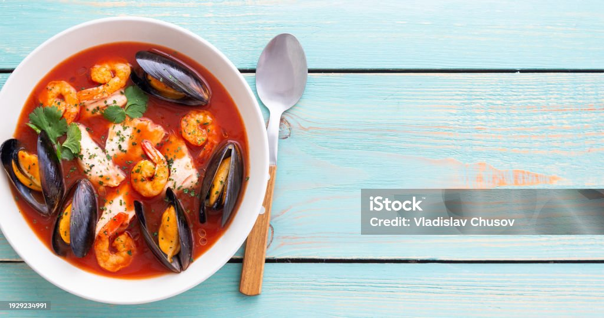

Positively, Absolutely, Not Real Bouillabaisse

Bouillabaisse is a traditional Provençal fish stew originating from the port city of Marseille, France. It is a flavorful dish made with a variety of fish, shellfish, and aromatic herbs. Alton Brown's "Positively, Absolutely, Not Real Bouillabaisse" is a playful twist on the classic French seafood stew. While it captures the essence of bouillabaisse with its rich fish stock, aromatic saffron, and a medley of seafood like mussels, lobster, and various fish fillets, it deliberately deviates from tradition. The key distinction lies in the absence of rascasse, the scorpion fish that is a hallmark of authentic bouillabaisse. This omission is what makes Alton's version "not real," as rascasse  is essential to the dish's identity and flavor profile. Instead, Alton's recipe embraces creativity, offering a delicious and approachable alternative for those who want to enjoy the spirit of bouillabaisse without adhering strictly to its traditional roots.
is essential to the dish's identity and flavor profile. Instead, Alton's recipe embraces creativity, offering a delicious and approachable alternative for those who want to enjoy the spirit of bouillabaisse without adhering strictly to its traditional roots.
- Level: Advanced
- Total: 2 hours
- Prep: 40 min
- Inactive: 5 min
- Cook: 1 hr 15 min
- Yield: 6 to 8 Servings
Ingredients:
Fish Stock:
- 1 pound raw fish heads, bones, lobster shells, and shrimp shells
- 4 whole fresh bay leaves
- 1 teaspoon coarse sea salt
- 1/2 teaspoon whole black peppercorns
- 6 cups filtered water
Stew:
- 1/2 cup olive oil, divided
- 6 ounces onion, coarsely chopped
- 3 ounces fennel bulb, coarsely chopped
- 1 teaspoon coarse sea salt, divided
- 1/2 cup dry white wine
- 1 (14 1/2-ounce) can diced tomatoes, undrained
- 1 (3-inch) piece orange peel, optional
- 1/16 teaspoon saffron
- 8 ounces firm fish fillets, such as farmed cobia or wild striped bass, skin and bones removed, cut into 1-inch pieces, at room temperature
- 2 cloves garlic, crushed
- 1/4 teaspoon cayenne pepper
- 8 ounces mussels, cleaned and beards trimmed, at room temperature
- 1 large raw lobster tail, shell removed and meat cut into 1-inch pieces, at room temperature
To Serve:
- 1 baguette, sliced
- 1 clove garlic, cut in half
- 1 recipe Rouille, recipe follows, optional
Rouille:
- 1 large red bell pepper
- 3 large cloves garlic, peeledf
- 1 fresh red chile, stem removed and seeded
- 1 teaspoon freshly squeezed lemon juice
- 1 1/4 teaspoon coarse sea salt
- 1/2 cup olive oil
Directions:
1For the fish stock: Rinse the fish heads and place in a tall 6-quart pot with tails, bones, lobster shell, bay leaves, 1 teaspoon sea salt, black peppercorns, and water. Place over high heat, cover, and bring to a boil. Decrease the heat to maintain a bare simmer and cook for 25 minutes. Strain, discard solids, and set the stock aside.
2
To make the stew: Place 1/4 cup olive oil in a clean 6-quart pot and set over medium heat. When the oil shimmers, add the onions, fennel, and 1/2 teaspoon sea salt. Saute until semi-translucent, about 10 minutes, stirring frequently. Deglaze the pan with the wine and scrape any bits from the bottom of the pan. Add the reserved fish stock, tomatoes, parsley, orange peel and saffron, if desired. Place over high heat, cover, and bring to a boil. Decrease the heat to maintain a simmer and cook for 15 minutes. Increase the heat to high. Add the remaining 1/4 cup olive oil, the remaining 1/2 teaspoon sea salt, fish, garlic, and cayenne pepper. Boil rapidly, uncovered, for 5 to 7 minutes, stirring occasionally. Remove the pot from the heat, add the mussels and lobster, cover, and let stand until the fish is cooked through and the mussels open, 2 to 4 minutes. Discard any unopened mussels.
3
To serve: Set the broiler to high. Lightly rub the baguette slices on both sides with the garlic. Place the prepared bread slices on a half sheet pan and broil, 1 inch away from the broiler, for 1 to 2 minutes. Turn the slices over and broil for another 1 to 2 minutes. Top with Rouille, if desired, and serve with fish stew.
Rouille:
 4
4
To serve: Set the broiler to high. Lightly rub the baguette slices on both sides with the garlic. Place the prepared bread slices on a half sheet pan and broil, 1 inch away from the broiler, for 1 to 2 minutes. Turn the slices over and broil for another 1 to 2 minutes. Top with Rouille, if desired, and serve with fish stew.
5
Place the roasted and skinned pepper, garlic, chile, lemon juice, and salt in the bowl of a mini-food processor. Process until smooth, 1 to 2 minutes. Stop and scrape down the side of the bowl once or twice. With the food processor running, slowly drizzle in the olive oil until thick. Serve with fish stew.